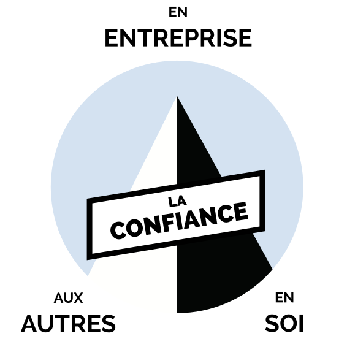
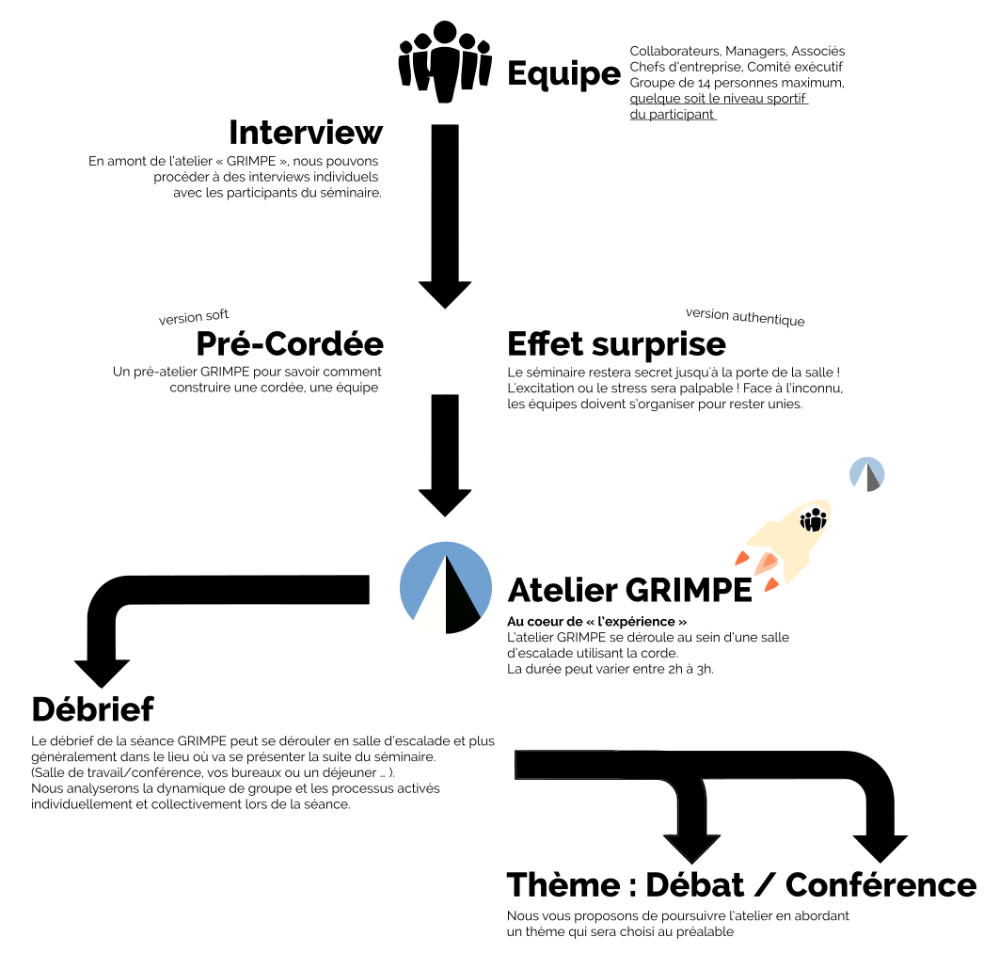

La confiance et l'action sont intimement liées à l'image des alpinistes qui grimpent l'un avec l'autre, c'est le célèbre "esprit de cordée".
Toute action comporte un risque : L'enfant qui apprend à marcher tout seul comme le grimpeur qui apprend à escalader doit à chaque pas ou à chaque prise, risquer un déséquilibre ou une chute.
Avec la confiance donnée par ses parents ou son assureur, ce risque peut être compensé puis sublimé par la réussite du pas ou l'atteinte de la prise suivante.
Peu à peu et avec l'expérience, la crainte et les peurs sont dépassées. En agissant, l'enfant progresse - le grimpeur et le collaborateur aussi.
Notre vie est à cette image.
Retrouvez la performance, retrouvez la confiance en osant l'expérience verticale !

L’expérience verticale est disponible dans l'ensemble des grandes villes de France sur des créneaux adaptés pour vos équipes.
Conscient que l'absence au bureau d'une équipe peut avoir un impact, nous avons des solutions pour aménager l'expérience au plus près de vos contraintes.
Nous vous proposons un séminaire sur-mesure avec différents scénarios :

Ce séminaire s'adresse aux entreprises, associations, ONG, fédérations ... qui souhaitent renforcer la cohésion d'équipe et le goût au challenge.
Dans l’entreprise comme dans une cordée, toute personne a un rôle et une place. Afin de ne pas pénaliser la dynamique du groupe, l'incapacité sportive a sa place entière dans l'équipe pour contribuer à la réussite collective.